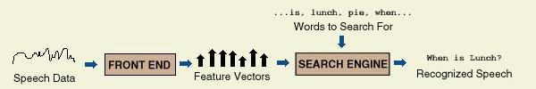
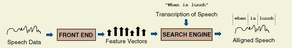
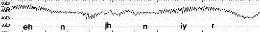

Kaldi-ASR
This project is about promoting Taiwanese aboriginal languages with finding the similarity of pronunciation between proper pronunciation and recorded sound from client.
A similar project: Speechace
Info for Audio Signals
- Tutorial for: MFCC
- Audio Analysis with Python: pyAudioAnalysis
- Bandpass filter: Butterworth filter
- Cosine similarity
- Euclidean vs. Cosine Distance
Info for ASR
- Good notes from a Czech guy: Link
- Forced Alignment: http://mirlab.org/jang/books/audiosignalProcessing/speechAssessment.asp?title=8-3%20%BBy%AD%B5%B5%FB%A4%C0
- Better info about Forced Alignment: Forced Alignment Presentation
- Old School HMM Toolkit: HTK
- Better HMM Toolkit: Kaldi
- Another Speech recognition: Julius
- General information about Kaldi: Kaldi as ASR
- How to start with Kaldi: Kaldi and Speech Recognition
- Lectures for Kaldi: Kaldi Lectures
- Open Speech Dataset: VoxForge
- Another Open Dataset: CLARIN
- Paper to read: The SRI EduSpeak System: Recognition and Pronunciation Scoring for Language Learning
Speech Recognition vs Force Alignment
A speech recognition system uses a search engine along with an acoustic and language model which contains a set of possible words, phonemes, or some other set of data to match speech data to the correct spoken utterance. The search engine processes the features extracted from the speech data to identify occurences of the words, phonemes, or whatever set of data it is equipped to search for and returns the results.

Forced alignment is similar to this process, but it differs in one major respect. Rather than being given a set of possible words to search for, the search engine is given an exact transcription of what is being spoken in the speech data. The system then aligns the transcribed data with the speech data, identifying which time segments in the speech data correspond to particular words in the transcription data.

Forced alignment can also be used to align the phonemes of the transcription data to the speech data given, similar to the image below, although with more explicitly defined boundaries on where each phoneme begins and ends.
